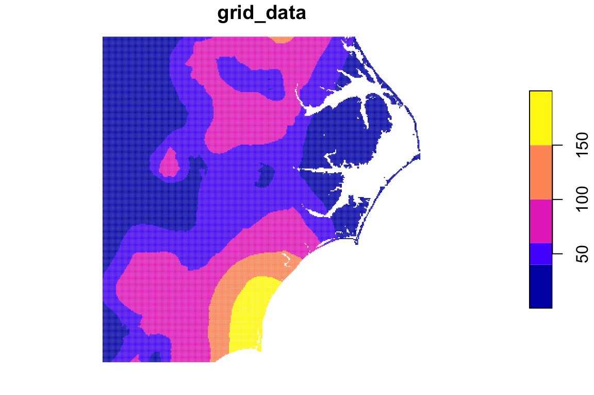
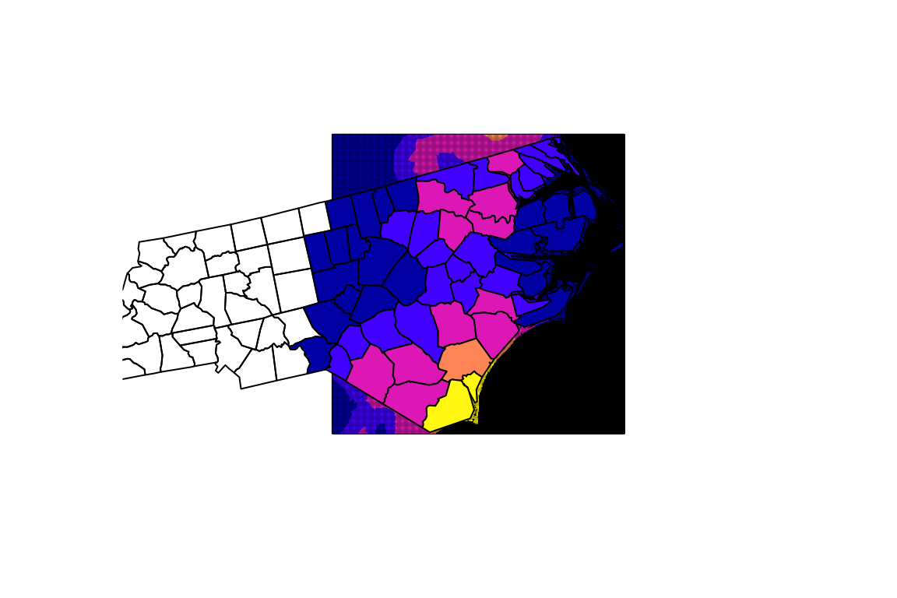

This is a simple demo showing what intersectr can do. In this demonstration, local data is used. See other package articles for details.
library(intersectr)
library(dplyr)
#>
#> Attaching package: 'dplyr'
#> The following objects are masked from 'package:stats':
#>
#> filter, lag
#> The following objects are masked from 'package:base':
#>
#> intersect, setdiff, setequal, union
library(sf)
#> Linking to GEOS 3.7.1, GDAL 2.4.0, PROJ 5.2.0
library(RNetCDF)
# Set an analysis projection to do intersection in.
analysis_projection <- "+init=epsg:5070"
# Use a sample file from the package.
nc_file <- system.file("extdata/daymet.nc", package = "intersectr")
nc <- open.nc(nc_file)
# Use a sample geometry from sf.
geom <- sf::read_sf(system.file("shape/nc.shp", package = "sf")) %>%
st_transform(analysis_projection)
# Look at what variables are available.
(nc_var <- ncmeta::nc_vars(nc))
#> # A tibble: 5 x 5
#> id name type ndims natts
#> <dbl> <chr> <chr> <dbl> <dbl>
#> 1 0 prcp NC_FLOAT 3 9
#> 2 1 time NC_DOUBLE 1 6
#> 3 2 y NC_FLOAT 1 2
#> 4 3 x NC_FLOAT 1 2
#> 5 4 lambert_conformal_conic NC_SHORT 0 11
# Choose a variable and get coordinate variables.
variable_name <- "prcp"
(nc_coord_vars <- ncmeta::nc_coord_var(nc, variable_name))
#> Warning in nc_coord_var_finder(dim, var, att, axe, variable): missing
#> coordinate variables names in coordinates attribute trying to find non-
#> auxiliary coordinate variables.
#> # A tibble: 1 x 5
#> variable X Y Z T
#> <chr> <chr> <chr> <chr> <chr>
#> 1 prcp x y <NA> time
# Pull out the coordinate variables and get them in projection units.
meters_per_km <- 1000
x <- var.get.nc(nc, nc_coord_vars$X, unpack = TRUE) * meters_per_km
y <- var.get.nc(nc, nc_coord_vars$Y, unpack = TRUE) * meters_per_km
# Create cell geometry for this geom
cell_geometry <- create_cell_geometry(col_coords = x,
row_coords = y,
prj = ncmeta::nc_gm_to_prj(ncmeta::nc_grid_mapping_atts(nc)),
geom = geom,
buffer_dist = 1000)
# Be explicit about the area intersection geometry and ids.
data_source_cells <- st_sf(select(cell_geometry, grid_ids))
target_polygons <- st_sf(select(geom, CNTY_ID))
st_agr(data_source_cells) <- "constant"
st_agr(target_polygons) <- "constant"
# Create the areal weights
area_weights <-
calculate_area_intersection_weights(data_source_cells, target_polygons)
# Run the intersection
intersected <- execute_intersection(nc_file = nc_file,
variable_name = variable_name,
intersection_weights = area_weights,
cell_geometry = cell_geometry,
x_var = nc_coord_vars$X,
y_var = nc_coord_vars$Y,
t_var = nc_coord_vars$T)
# Get data ready to create plots.
col_inds <- seq(min(cell_geometry$col_ind), max(cell_geometry$col_ind), 1)
row_inds <- seq(min(cell_geometry$row_ind), max(cell_geometry$row_ind), 1)
ids <- intersectr:::get_ids(length(col_inds), length(row_inds))
grid_data <- var.get.nc(nc, variable_name,
start = c(min(col_inds), min(row_inds), 3),
count = c(length(col_inds), length(row_inds), 1),
unpack = TRUE)
grid_data <- data.frame(grid_data = matrix(grid_data,
ncol = 1,
byrow = TRUE),
grid_ids = matrix(ids, ncol = 1))
grid_data$grid_data[grid_data$grid_data < 0] <- NA
grid_data <- left_join(cell_geometry, grid_data, by = "grid_ids")
geom_data <- select(geom, CNTY_ID) %>%
left_join(data.frame(CNTY_ID = as.numeric(names(intersected)[2:ncol(intersected)]),
poly_data = as.numeric(intersected[3, 2:ncol(intersected)])), by = "CNTY_ID")
geom_data <- st_transform(geom_data, st_crs(grid_data))
breaks <- c(0, 40, 60, 100, 150, 200)
plot(grid_data["grid_data"], border = NA, breaks = breaks)
plot(grid_data$geometry)
plot(grid_data["grid_data"], border = NA, breaks = breaks, add = TRUE)
plot(geom_data["poly_data"], breaks = breaks, add = TRUE)